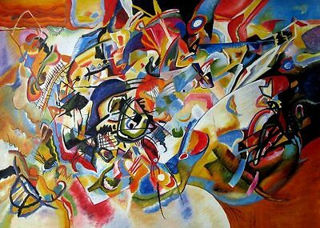
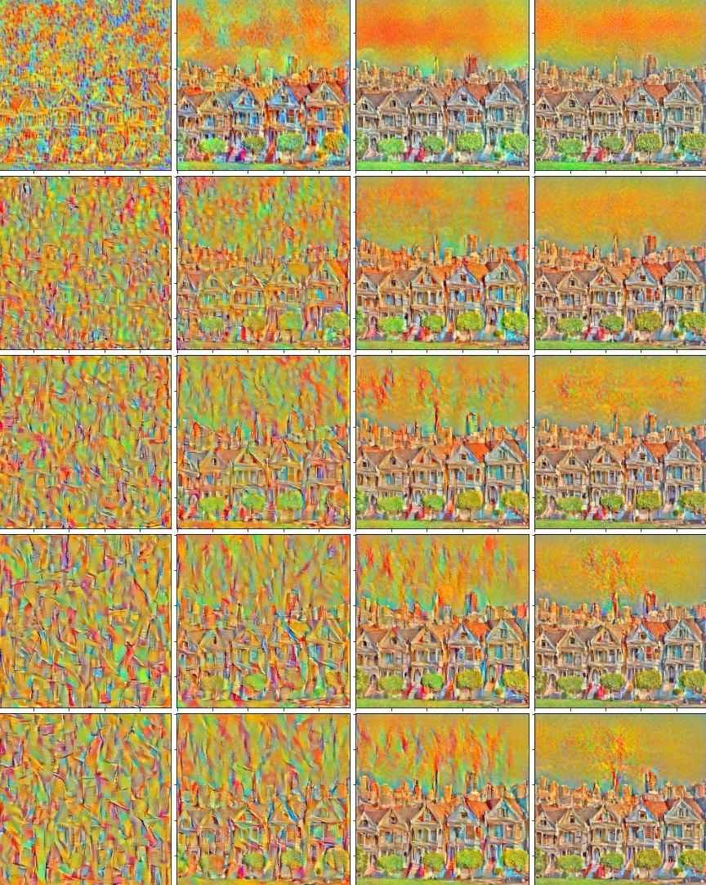

Style, content, and input images
The first step was to first load our images. We chose one image as my “style image,” which contained the artistic style I was trying to make my network emulate. We then chose a “content” image, which contained the content / structure of the underlying image. Finally, we chose our input image, which was the image we were changing the style of — in most cases, we set that image to simply be a clone of the content image in order to better show the structure of the content. When we simply used a white noise / randomly generated image as the input, it still worked well, but the structure was less defined for a smaller number of epochs. Since we are using the VGG19 network, we had to normalize (mean = [0.485, 0.456, 0.406], std = [0.229, 0.224, 0.225]) and crop all of these images before feeding them into the network. We chose a crop size of (550, 550) because we didn't see a size defined in the paper, and it seemed like a good enough resolution to apply the transfer to while also not being incredibly time intensive to process.
| Image | Normalized image |
|---|---|
Approach
The bulk of the work was centered around computing the correct style and content losses. The loss computations described below were only computed at every style or content layer, respectively, which is why in our implementation we had to iterate through every layer in the network to find the correct layers at which to compute and add the various loss terms.
The style loss was computed by calculating the Gram matrix, which is essentially just the inner product between the vectorized feature map of a given layer:
Taking this gram matrix value, we were able to compute the error by finding the difference / distance between the gram matrix representation and the original image. In this equation, a is the original image and x is the generated image, and N and M are the image’s height and width, respectively. To compute the final style loss, we take this error and weight it depending on how many convolutional style layers (max = 5) are active. This variability in weight was relevant when computing the different style representations below!
The content loss was computed by finding the MSE between the original image’s and the content image’s content representations (where p is the original image, x is the generated image, and P and F are their respective feature representations).
To find the total loss over which we ultimately would backpropagate and use to update our image’s style and content, we multiplied the style and content loss values by alpha and beta terms [total_loss = alpha * content_loss + beta * style_loss]. We can see the result of different alpha/beta ratios in the style representation section below!
Results
Applying different styles to this photo of the painted ladies:
NOTE: for all of these images, the # epochs = 800, learning rate = 0.05, alpha = 1, and beta = 1e4
With a larger number of epochs, all of these images would likely have a better style transfer. However, running the model took quite a bit of time per image so we were reasonably unable to run the algorithm on each image for more than a few hundred epochs.
| Starry night by Vincent Van Gogh, 1889 | Styled image |
|---|---|

|
|
| Composition VII by Wassily Kandinsky, 1913 | Styled image |
|  | |
| The Shipwreck of the Minotaur by J.M.W. Turner, 1805 | Styled image |

|
The paper mentioned switching out the Max Pooling operations with Average Pooling operations for better results! We weren't convinced, so we tried both. Here is a comparison of the results of using average and max pooling on the style representation images, given a static input image. Based on the first two results, it's clear that average pooling creates a much smoother and visually appealing output!
For these images, just as defined in the paper, each row corresponds to the outputs computed based on a given layer's loss (conv1_1, conv2_1, conv3_1, conv4_1, and conv5_1 from top to bottom), and each column corresponds to its alpha/beta ratio (1e-5, 1e-4, 1e-3, 1e-2 from left to right). As you can see, as the ratio gets smaller (so the beta, style weight becomes larger), the style become more pronounced. As this ration decreases, the content becomes progressively more clear. We can also see that as the number of layers increases, we get thicker and more detailed strokes. The lower layers use small strokes, and higher layers use thick strokes primarily, which combines to create a cohesive scene. This type of representation allows us to visualize not only the contribution of each style layer to the final "painting" (represented primarily by the size and shape of brush strokes, in this example) but also allows us to see how those styles are applied to the image, and combined to find the final ourput (bottom right image). With a greater number of epochs, we can also see that the content image / structure of the image is much more pronounced.
| Style Image | Content image | Input image -- random static! |
|---|---|---|
| Average pooling, 400 epochs |
|---|
| Max pooling, 400 epochs |
|  |
| Max pooling, 1000 epochs |
Bonus images with the style transfer applied!
| Starry night | Chipotle | Starry Chipotle |
|---|---|---|
|
|
For this output, we only ran it for 100 epochs and the stlye was so pronounced -- we were shocked!
| Cubist portrait | Anjali | Cubist Anjali |
|---|---|---|

|